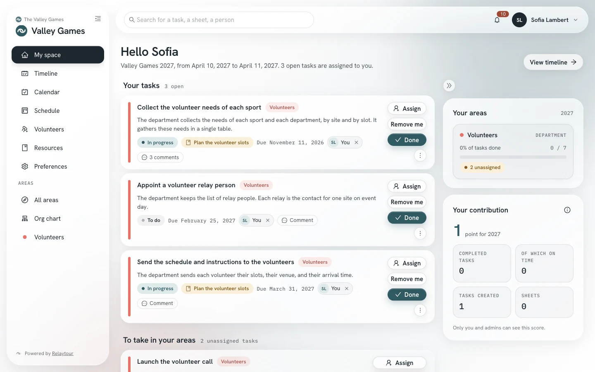
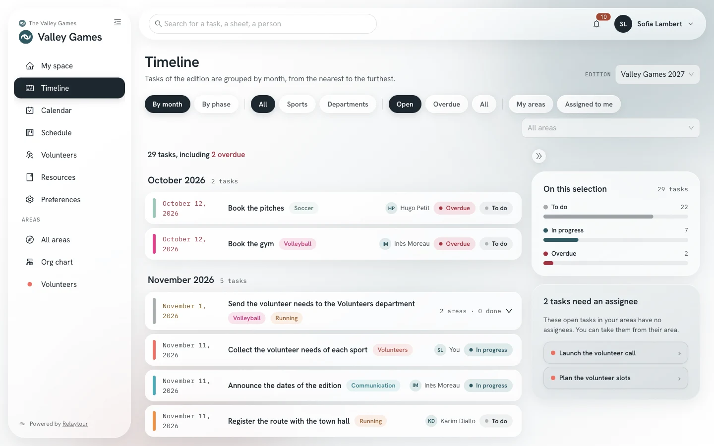
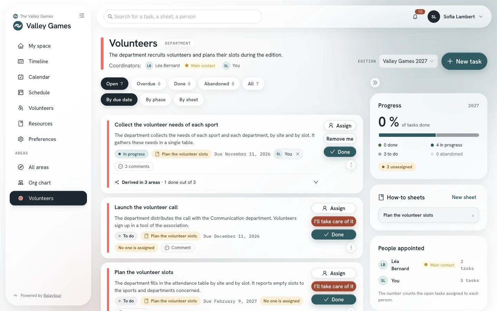
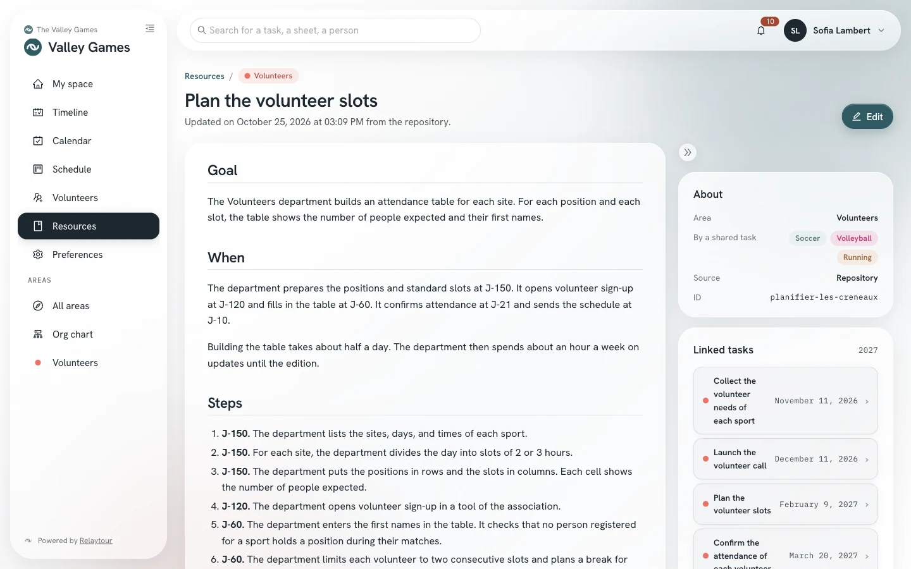
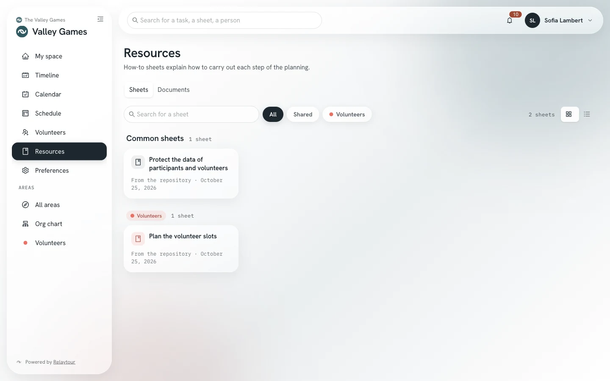

Too much work rests on too few people
One or two people often carry the logistics and the relations with partners. This overload leads to a loss of coordination.
Relaytour organizes the preparation of a recurring event run by volunteers. Each sport and each department finds its coordinators, its tasks dated relative to the event day and its how-to sheets in one place.
A community event is often prepared over nearly a year. The volunteers who run it change from one year to the next.
One or two people often carry the logistics and the relations with partners. This overload leads to a loss of coordination.
A team formed in the fall can drift apart until spring. Without a regular check-in, it quickly loses members.
The know-how of one edition stays in the memory of a few people. The next team often starts the procedures over from scratch.
Relaytour runs in a browser. Members sign in with a code received by email, without a password. An admin invites each person and assigns them to their area.
Areas stay the same from one edition to the next. Each edition assigns new people to them.
Each task template carries a relative due date, for example D-120. Relaytour recalculates every date from the date of the edition.
Each sheet describes how to carry out a procedure. Coordinators correct it during the edition, and the history keeps every version.
Each area has a target headcount. Admins see the seats still open and the interests of members.
Relaytour sends a reminder before each due date and a periodic digest. Each person sets how often they receive these emails.
Search finds tasks, sheets and people. Each person only finds what they can already view.
The screenshots show the sample organization shipped with Relaytour. The people and the data are fictional.

A coordinator’s home page lists their tasks, their areas and their contribution.

The timeline groups the tasks of all areas by month. Filters limit the display to one type of area or to your own tasks.

An area page shows its tasks, its progress, its how-to sheets and the people assigned to it.

A sheet describes a procedure step by step. It lists the tasks of the edition that cite it.

Sheets can be filtered by area and displayed as cards or as a compact list.

Admins follow the progress of each area, the overdue tasks and the tasks nobody has picked up.
Common tools cover part of the need. No category covers the preparation of a recurring event by a volunteer team, all the way to the handover to the next edition.
| Type of tool | Dates recalculated from the event day | Method handed on to the next edition | Seats per sport and per department |
|---|---|---|---|
| Spreadsheet and shared folder | No Every date is redone by hand. |
Partial Documents exist, with no validated version. |
No |
| Project boards | No A copied board keeps the old dates. |
Partial Pages go out of date and nobody validates them. |
No |
| Advanced project management | Yes Often in a paid plan. |
No | No |
| Association management | No | No | No |
| Day-of volunteer scheduling | No Reminders the day before a slot. |
No | Partial Day-of slots, not the preparation. |
| Relaytour | Yes Task templates are recalculated for each edition. |
Yes Sheets are versioned and written back to the organization’s repository. |
Yes Target headcounts, appointments and interests. |
Ticketing, memberships and accounting stay in association management tools. Match brackets and day-of slots stay in specialized tools.
The software is free. Only the server that hosts it has a cost. The reference deployment runs on a small server.
A community tool often disappears with the person who set it up, or with a vendor’s free plan. Relaytour is designed to avoid both situations.
Areas, sheets and task templates live in a repository owned by the organization. They are text files, readable and editable without Relaytour.
The AGPL-3.0 license forbids closing the code. Nobody can withdraw the published version or make it paid.
The code, the architecture decisions and the installation are publicly documented. A volunteer developer can take over the maintenance.
When you create an edition, Relaytour recreates the task templates with their new dates. The sheets corrected during the edition become the basis of the next one.
organisation-modele
The organization creates its repository from the template, then describes its areas, its theme and its sheets in it.
docker compose
The reference deployment runs as a Compose stack on a small server.
orga:importer
The import creates the areas, the sheets and the dated tasks of the edition.
admin
Admins invite members and assign them to their areas.